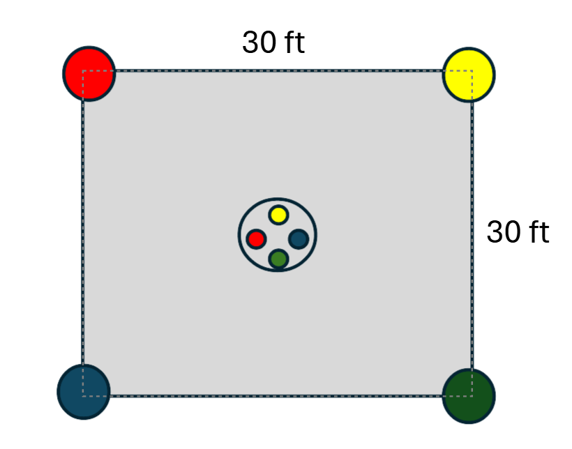
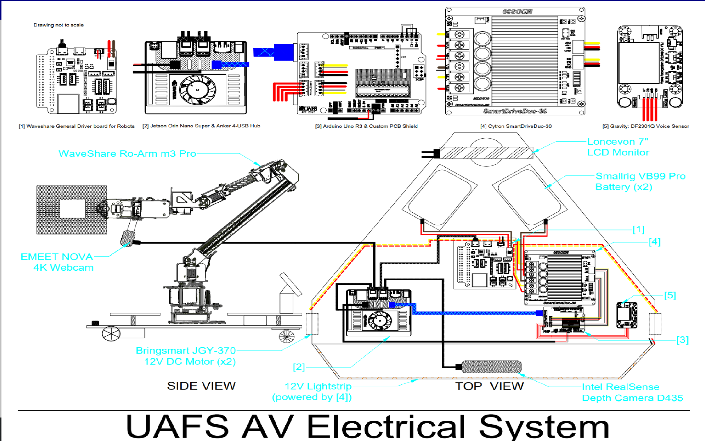

Project Overview
Our team competed in the statewide Autonomous Vehicle Challenge, securing 2nd place in the 2024-2025 season and taking 1st place in 2025-2026. The competition required the vehicle to navigate a 30ft x 30ft square competition space with a different colored bucket in each corner. In the center of the area is a 2ft radius hulahoop with 4 different colored balls matching the buckets within it. The goal of the compeition is to accumulate the most points by placing all of the balls in the coresponding bucket in a specific order while gaining bonus points for speed.

Electronic Hardware
A major component of our success was the combination of many different electronic systems including a manipulator. I worked on all electrical integration on the vehicle. Below is a drawing of the systems onboard the vehicle.

OverView
On the hardware side the vehicle features two modules for compute: the Jetson Orin Nano and arduino uno r3. The Jetson acts as the main brain of the vehicle; it runs a local YoloV11 model for detecting the multicolor balls and buckets across 2 cameras including the realsense 435i lidar camera. The lidar camera is used to detect objects with its rgb sensor aswell as determine the distance to our detections with the lidar matrix sensor. The language chosen for the project was python; Python is the best option for development speed with the small team we had aswell as many libraries that I relied on (ultralytics for Yolov11 , open cv, and more). The Uno R3 ,while not being fast, was utelized as I have a lot of experience developing on it and was more than fast enough; We polled from an 9 axis IMU, DF-Robot voice detection module, ultrasonic sensors, and encoder motors. The smartdriveduo 30 Cytron motor driver receives commands from the uno to drive the motors.
- Jetson Orin Nano & Uno R3.
- Communication Pipeline between jetson and uno.
- IMU, Voice Detection Module, Encoded Motors
- Computer Vision, AI detection, and lidar detection
Software & Computer Vision
To navigate the field and score points, the robot needed reliable vision and possibly localization. The vehicle features 2 cameras running the YoloV11 model over.
- Object Detection: Trained a custom YOLO v11 AI model deployed on an NVIDIA Jetson to detect colored balls and buckets in real-time.
- Localization:In the new 2026-2027 Vehicle: Implemented a Monte-Carlo particle filter using an occupancy map to predict and track the robot's pose on the field.
- Telemetry: Built a custom video feed and sensor visualization dashboard to monitor data stream.